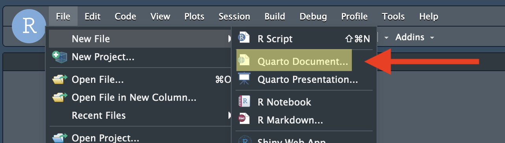

---
title: "Untitled"
format: html
---第5回講義資料
Quartoと再現可能な研究
スライド
qmdファイルの作成
手順1: RStudioを起動し、プロジェクトを作成する。
手順2: File > New > Quarto Document…を選択する。

手順3: OKをクリックする。
- この段階で文書のタイトル（Title:）と作成者名（Author:）を指定することも出来るが、手順4で修正するので、ここではOKをクリックしても良い。ただし、「Use visual markdown editor」にチェックが付いている場合、予め外しておくこと1。

手順4: タイトル情報などを以下のように修正する。
変更前
変更後
---
title: "はじめてのQuarto"
author: "関大花子"
date: "2023/5/11"
lang: ja
format: html
---- 1
- タイトル
- 2
- 作成者名
- 3
- 作成日
- 4
- 文書の言語
- 5
- 出力フォーマット
Tip自動的に日付を付けたい
date:の内容をdate: todayに修正するとRenderした日付が自動的につけられる。
手順5: ファイルを保存する。ファイル名は適宜付けること。
- ファイルの保存はFile > Saveか、ショートカットキー（macOSだとCmd + S（Command-SCommand-S）、WindowsだとControl + S（Control-SControl-S））で出来る。
手順6: Sourceペイン上段のRenderをクリックする。
- ショートカットが便利。macOSはCmd + Shift + K（Command-Shift-KCommand-Shift-K）、WindowsはControl + Shift + K（Control-Shift-KControl-Shift-K））で出来る。

手順7: 新しいウィンドウ、またはViewerペインに出力物が表示される。
Note出力物が新しいウィンドウに表示されて面倒くさい
宋が推奨するRStudioの設定だと出力物がRStudioと同じ画面（Viewerペイン）に表示される。具体的にはTools > Global Options… > R Markdownへ移動し、Show output preview in:をWindowからViewer Paneに変更すれば良い。
Markdown文法の基本
ここでは本講義の課題を遂行するための必要最低限のことのみ解説する。Quartoの詳細については教科書の「Quarto [基礎]」を参照すること。
改行
Markdownにおける改行はやや特殊である。特殊といっても難しいことではない。普段よりもう一行改行するだけだ。Markdownの場合、1回の改行は改行として判定されず、同じ行の連続と認識する。たとえば、Inputのように入力するとOutputのように文章1と文章2が繋がってしまう。
Input:
文章1
文章2Output:
文章1 文章2
文章1と文章2を改行するためにはもう一行、改行する必要がある。以下の例を見てみよう。
Input:
文章1
文章2Output:
文章1
文章2
こうすることで段落間の間隔を強制的に入れることとなり、作成者側にも読みやすい文書構造になるといった利点がある2。
強調
文章の一部を強調する方法として太字、イタリック3、アンダーラインがあり、強調ではないが、ついでに取り消し線についても紹介する。いずれも強調したい箇所を記号で囲むだけだ。
Input:
文章の一部を**太字**にしてみましょう。
*イタリック*もいいですね。
~~取り消し線~~はあまり使わないかも。
<u>アンダーライン</u>はHTMLタグを使います。Output:
文章の一部を太字にしてみましょう。
イタリックもいいですね。
取り消し線はあまり使わないかも。
アンダーラインはHTMLタグを使います。
箇条書き
箇条書きには順序なしと順序付きがある。順序なしの場合*または-の後に半角スペースを1つ入れるだけである。また、3文字以上の字下げで下位項目を追加することもできる。
Input:
- 項目1
- 項目1-1
- 項目1-2
- 項目1-2-1
- 項目1-2-1-1
- 項目1-2-2
- 項目2
- 項目3Output:
- 項目1
- 項目1-1
- 項目1-2
- 項目1-2-1
- 項目1-2-1-1
- 項目1-2-2
- 項目1-2-1
- 項目2
- 項目3
順序付き箇条書きは、これは-（または*）を数字.に換えるだけである。順序なしの場合と違って数字の後にピリオド（.）が付くことに注意すること。数字は自動的に番号が振られるので1.、2.、…でなく、1.、1.、1.、…のような書き方でも良い。また、順序付き箇条書きと順序なし箇条書きは組み合わせて使うことも出来る。
Input:
1. 項目1
1. 項目1-1
1. 項目1-2
1. 項目1-3
2. 項目2
- 項目2-1
- 項目2-2
3. 項目3Output:
- 項目1
- 項目1-1
- 項目1-2
- 項目1-3
- 項目2
- 項目2-1
- 項目2-2
- 項目3
見出し
章、節、段落のタイトルを付ける際は#を使う。#の数が多いほど文字が小さくなる。章の見出しを##にするなら節は###、小節または段落は####が適切だろう。Quartoの仕様上、見出しは####まで使える。
Input:
# 見出し1
## 見出し2
### 見出し3
#### 見出し4Output:
見出し1
見出し2
見出し3
見出し4
区切り線
区切り線は---または***を使う。ただし、---または***の前後には必ず改行を行うこと。とりわけ、---の前に空いた行がないと、見出しとして認識されるケースがある。
Input:
---Output:
表
Markdownの表は非常にシンプルな書き方をしている。行は改行で、列は|で区切られる。ただ、表の第1行はヘッダー（変数名や列名が表示される行）扱いとなり、ヘッダーと内容の区分は|---|で行う。以下はMarkdownを利用した簡単な表の例である。ここでは可読性のために、適宜スペースを入れたが、スペースの有無は結果に影響を与えない。
Input:
|ID |Name |Math |English |Favorite food|
|:---:|---------|-------:|-------:|-------------|
|1 |SONG |15 |10 |Ramen |
|2 |Yanai |100 |100 |Cat food |
|3 |Shigemura|80 |50 |Raw chicken |
|4 |Wickham |80 |90 |Lamb |Output:
| ID | Name | Math | English | Favorite food |
|---|---|---|---|---|
| 1 | SONG | 15 | 10 | Ramen |
| 2 | Yanai | 100 | 100 | Cat food |
| 3 | Shigemura | 80 | 50 | Raw chicken |
| 4 | Wickham | 80 | 90 | Lamb |
1行目はヘッダーであり、太字かつ中央揃えになる。2行目以降はデフォルトでは左揃えになるが、|---|をいじることによって当該列の揃えを調整できる。|:---|は左 (デフォルト)、|---:|は右、|:---:|は中央揃えになる。また-の個数は1個以上なら問題なく、|-|も|---|も同じである。
画像
Markdownに画像を入れるにはと入力する。画像ファイル名はパス付きのファイル名4か画像のURL5を指定する必要がある。[代替テキスト]は画像を読み込めなかった場合に出力されるテキストを意味する。これは画像が読み込めなかった場合の代替テキストでもあるが、視覚障害者用のウェブブラウザーのためにも使われる。これらのウェブブラウザーはテキストのみ出力されるものが多く、画像の代わりには代替テキストが読み込まれる。また、場合によっては代替テキストが図のタイトル（キャプション）として機能する場合もある（以下の例がそうである）。この代替テキストは必須でないためでも画像の添付は出来る。
例えば、Figsフォルダー内のfavicon.pngというファイルを読み込む場合、以下のように書く。
Input:
Output:

ファイルのパスの代わりにURLを入れると、ウェブ上の画像を入れることもできる。
Input:
Output:

の後ろに{}を付けるといくつかのオプションが指定できる。たとえば、画像の幅を25%にしたい場合はwidth=25%を追加する。
Input:
{width=25%}Output:
リンク
ハイパーリンクは[テキスト](URL)のように書く。[]内は実際に表示されるテキストであり、()は飛ばすURLとなる。
Input:
毎日1回は[SONGのホームページ](https://www.jaysong.net)へアクセスしましょう。Output:
毎日1回はSONGのホームページへアクセスしましょう。
脚注
脚注は[^固有識別子]と[^固有識別子]: 脚注内容の2つの要素が必要だ。まず、文末脚注を入れる箇所に[^xxxx]を挿入する。xxxxは任意の文字列で良い。しかし、同じQuarto文書内においてこの識別子は被らないように注意すること（固有識別子だから）。実際の脚注の内容は[^xxxx]: 内容のように入力する。これはどこに位置しても問題ない。文書の途中でも、最後に入れても、脚注の内容は文末に位置する。ただし、脚注を入れる段落のすぐ後の方が作成する側としては読みやすいだろう。
Input:
これは普通の文章です[^foot1]。
[^foot1]: これは普通の脚注です。Output:
これは普通の文章です6。
数式
以下の内容（数式）は少なくとも本講義（ミクロ政治データ分析実習）では使わないため、飛ばしても良い。
インライン数式は$数式$で埋め込むことができる。数式は\(\LaTeX\)の書き方とほぼ同じだ。ちなみに、Quartoの数式はMathJaxによってレンダリングされる。このMathJaxライブラリはHTMLに埋め込まれているのではないため、インターネットに接続せずにHTMLファイルを開くと数式が正しく出力されない可能性がある。
Input:
アインシュタインと言えば、$e = mc^2$でしょう。Output:
アインシュタインと言えば、\(e = mc^2\)でしょう。
数式を独立した行として出力する場合は、$の代わりに$$を使用する。
Input:
独立した数式の書き方
$$
y_i \sim \text{Normal}(\mathbf{X} \boldsymbol{\beta}, \sigma).
$$Output:
独立した数式の書き方
\[ y_i \sim \text{Normal}(\mathbf{X} \boldsymbol{\beta}, \sigma). \]
もし数式が複数の行で構成されている場合は$$内にaligned環境（\begin{aligned} … \end{aligned}）を使用する。むろん、使い方は\(\LaTeX\)と同じである。
Input:
複数の行にわたる数式の書き方
$$
\begin{aligned}
Y_i & \sim \text{Bernoulli}(\theta_i), \\
\theta_i & = \text{logit}^{-1}(y_i^*), \\
y_i^* & = \beta_0 + \beta_1 x_1 + \beta_2 z_1.
\end{aligned}
$$Output:
複数の行にわたる数式の書き方
\[ \begin{aligned} Y_i & \sim \text{Bernoulli}(\theta_i), \\ \theta_i & = \text{logit}^{-1}(y_i^*), \\ y_i^* & = \beta_0 + \beta_1 x_1 + \beta_2 z_1. \end{aligned} \]
ここまで見れば\(\LaTeX\)ユーザーはお分かりだろうが、$$の中には\(\LaTeX\)コマンドが使える。たとえば、行列を作成する際は以下のように\begin{bmatrix}環境を使う。
Input:
行列の書き方
$$
X = \begin{bmatrix}
x_{11} & x_{12} \\
x_{21} & x_{22} \\
x_{31} & x_{32}
\end{bmatrix}.
$$Output:
行列の書き方
\[ X = \begin{bmatrix} x_{11} & x_{12} \\ x_{21} & x_{22} \\ x_{31} & x_{32} \end{bmatrix}. \]
引用
引用の際は文章の最初に>を入れるだけだ。>の後に半角のスペースを1つ入れること。
Input:
「政治とは何か」についてイーストンは以下のように定義しました。
> [A] political system can be designated as those interactions through which values are authoritatively allocated for a society.Output:
「政治とは何か」についてイーストンは以下のように定義しました。
[A] political system can be designated as those interactions through which values are authoritatively allocated for a society.
コメント
Markdownにもコメントを付けることができる。とりあえず書いたが要らなくなった段落や文章があって、消すことがもったいない場合はコメントアウトするのも1つの方法だろう。ただし、Rのコメントアウトの方法は#だったが、これはMarkdownでは見出しの記号である。Markdownのコメントは<!--と-->で囲む必要がある。
Input:
文章1
<!--
ここはコメントです。
-->
文章2Output:
文章1
文章2
Rコード
Rコードの入れ方
以上の内容まで抑えると、Quartoを使って、簡単な文法のみで構造化された文書が作成できる。しかし、Quartoの意義は文章とコード、結果が統合されることだろう。それでは文書内にRコードとその実行結果を入れる方法を紹介する。
コードは```{r}と```の間に入力するだけだ7。これでコードと結果が同時に出力される。たとえば、sum(1:100)とprint("Hello World!")といったコードだけでなく、実行結果まで出力してみよう。
Note
`はどこにありますか。
これは使用するキーボードの配列によって異なる。日本語配列キーボードの場合、「@」と同じ所に位置するケースが多い。ただ、日本語配列は世界標準からかなりずれている配列を採用しており、日本語以外の配列では主に「〜」と同じ所に位置する。たとえば、宋はUNIX配列（HHKB）を使っているため、キーボードの右上に位置するが、左上に位置するケースも多い。ちなみに単一引用符（'; 「シングル・クォーテーション」とも呼ばれる）とは別の記号であることに注意すること。
Input:
Output:
- 1, 2, 3, …, 100の合計を計算し、出力する
- “Hello World!”を出力する
```{r}と```で囲まれた範囲をQuartoではチャンク（Chunk）と呼ぶ。このチャンク内に書かれたRコードはRenderされた文書においてコードとその結果が出力される8。チャンク内ではパッケージやデータの読み込み、オブジェクトの生成、データハンドリング、可視化など、Rで出来る全てが出来る。可視化の方法については第12回講義以降の講義で解説するが、ここでは例として紹介する。
Input:
以下のコードは{tidyverse}パッケージを読み込み、irisデータセットを可視化するコードである。
```{r}
# パッケージの読み込み
library(tidyverse)
# R内蔵データセットのirisを使った可視化
iris |>
mutate(Species2 = recode(Species,
"setosa" = "セトナ",
"versicolor" = "バーシクル",
"virginica" = "バージニカ")) |>
ggplot() +
geom_point(aes(x = Sepal.Length, y = Sepal.Width, color = Species2)) +
labs(x = "萼片の長さ (cm)", y = "萼片の幅 (cm)", color = "品種") +
theme_minimal(base_size = 12)
```
ggplot()関数は{ggplot2}パッケージが提供するものであるが、{tidyverse}を読み込めば{ggplot2}も自動的に読み込まれるので、{ggplot2}パッケージを別途読み込む必要はない。Output:
以下のコードは{tidyverse}パッケージを読み込み、irisデータセットを可視化するコードである。
# パッケージの読み込み
library(tidyverse)
# R内蔵データセットのirisを使った可視化
iris |>
mutate(Species2 = recode(Species,
"setosa" = "セトナ",
"versicolor" = "バーシクル",
"virginica" = "バージニカ")) |>
ggplot() +
geom_point(aes(x = Sepal.Length, y = Sepal.Width, color = Species2)) +
labs(x = "萼片の長さ (cm)", y = "萼片の幅 (cm)", color = "品種") +
theme_minimal(base_size = 12)ggplot()関数は{ggplot2}パッケージが提供するものであるが、{tidyverse}を読み込めば{ggplot2}も自動的に読み込まれるので、{ggplot2}パッケージを別途読み込む必要はない。
Importantチャンクの前後は必ず改行しよう
一つ注意すべき点がある。それはチャンクの前後は必ず改行することだ。以上のコード（Input:）の2行目と17行目がその例である。ここが改行されていない場合でも作動はするが、変なメッセージが表示されてしまう。また、改行されているように見えても、実は全角スペースが含まれているケースがある。全角スペースはスペースのように見えて、実は文字扱いとなる邪悪なものだ。しかも、特殊なフォントを使わない限り、目に見えない点でさらに邪悪だ。「普通に改行しているのに、なにかおかしいなー」と思ったら全角スペースが含まれていないか確認しよう。
インラインコード
他にも文中にRコードを埋め込むこともできる（これをinline codeと呼ぶ）。例えば、ベクトルX <- c(2, 3, 5, 7, 12)があり、この平均値を文中で示したいとする。むろん、文中に「5.8」と書いても問題なし。しかし、実はXの入力ミスが見つかり、実はc(2, 3, 5, 7, 11)になったらどうなるだろうか。この「5.8」と書いた箇所を見つけて5.6と修正したいといけない。これは非常に面倒な作業であり、ミスも起こりやすい。文中にRコードを入れるためには`r Rコード`のように入力する。
Input:
Output:
変数Xの平均値は5.6です。
ここで`X`だが、単に`で囲まれただけだとコードのように表示してくれるものの、そのコードは実行されない。これは主に文中に短いコードのみを入れたり、変数名、関数名を示す際に使う機能である。
コードの非表示
既に説明した通り、QuartoはRとMarkdownが一つになったものである。Rはチャンク内、Markdownはチャンク外の部分に相当し、それぞれのカスタマイズができる。分析のコードと結果はチャンクにオプションを付けることで修正できる。ここではチャンクのオプションについて解説する。
チャンクは```{r}で始まるが、実は{r}の箇所にオプションを追加することができる。具体的にはチャンクの最上行に「#| + 半角スペース」でオプションを指定する。ここではよく使う2つのオプションを紹介する。
まずはコードを表示せず、結果のみを表示させる方法である。Quartoでレポートや論文を執筆する場合、最終的に提出するものにコードは不要であろう9。Quartoではコードと結果が同時に表示されるが、片方（あるいは両方）を非表示にすることができる。オプションとしてecho: falseを指定すれば、コードは表示されず、結果のみ表示される。
Input:
Output:
[1] "Rは楽しい!"結果の非表示
一方、#| eval: falseを指定すれば、結果は表示されず、コードのみ表示される。本ページのようにマニュアルや技術書を書く際、時々使われる。
Input:
Output:
このようにコードのみ表示され、結果は表示されない。チャンクには他にも様々なオプションを付けることができる。出力される図の大きさ、位置、解像度、コードの非常時、結果の非表示、チャンク間の依存関係などが指定できるが、これらについては教科書の「Quarto [基礎]」を参照すること。
また、Quartoでは様々な形式の文書（以外のものも）が作成可能である。たとえば、本講義のサポートページだけでなく、宋のホームページや本講義の教科書、本講義のスライドもQuartoで作成されたものである。これらの作り方についてはQuarto公式ホームページを参照されたい。
番外編：PDF出力
QuartoはHTMLだけでなく、様々なフォーマットに対応しており、PDF出力も可能だ。Quartoで作成した.qmdファイルがPDFフォーマットになるまでの過程は以下の通りであり、\(\LaTeX\)の知識も要求される。複雑に見えるが、単にPDFファイルを出力したいだけなら、そこまで難しくはない。
flowchart LR
A[.qmd] --> B{Quarto}
B --> C[.md]
C --> D{Pandoc}
D --> E[.tex]
E --> F{LaTeX}
F --> G[.pdf]
まず、{tinytex}パッケージをインストールする。この作業はすぐ終わる。本講義の履修者であればインストール済みのため、「Code 03」から始めよう。
続いて、{tinytex}パッケージのinstall_tinytex()関数を実行する。この作業はインターネット環境によって数分かかる可能性がある。
ただし、以下のようなメッセージが出力されたら既にTinyTeXがインストールされていることを意味するため、コンソールに「N」を入力し、Enter / Returnを押す。
Found '/home/jovyan/.TinyTeX/bin/x86_64-linux/tlmgr', which indicates a LaTeX distribution may have existed in the system.
Continue the installation anyway? (Y/N) 続いて、日本語フォントをインストールする。LaTeXデフォルトの和文フォントであるHaranoajiをインストールする。ここでも数分かかる可能性がある。
以上の作業は新しい分析環境を立ち上げない限り、1回だけで良い。通常のパッケージ同様、別のプロジェクトであっても以上の作業は不要だ。
最後に.qmdファイルのYAMLヘッダーを以下のように修正する。
---
title: "かっこいいタイトルを付けよう"
subtitle: "こちらにもかっこいいサブタイトルを！"
author: "児島惟謙"
date: "2025-05-09"
lang: ja
# PDF設定
format:
pdf:
pdf-engine: lualatex
documentclass: ltjsarticle
classoption:
- lualatex
- a4paper
- 10pt
toc: false
toc-depth: 3
number-sections: true
# チャンクのオプション
knitr:
opts_chunk:
dev: "ragg_png"
fig.align: "center"
dpi: 300
warning: false
message: false
---- 1
- 図の文字化け防止
- 2
- 画像は中央揃え
- 3
- 図の解像度（印刷を考えるなら300以上）
- 4
- 警告メッセージを表示させない
- 5
- メッセージを表示させない
あとはこれまでと同様、Renderするだけだ。最初のRenderは必要なパッケージのインストールのため、数分くらいかかるが、次回からはそこまで時間はかからない（同じ分析環境であれば、別の.qmdファイルでも時間はあまりかからない）。文書の量にもよるが、数ページ程度の文書なら1分以内にコンパイルが完了するはずだ。コンパイル時間が気になる人はPDFエンジンをlualatexからxelatexに変えることである程度改善できる（lualatexは柔軟かつ強力だが、動作がかなり重い）。ただし、エンジンを変更するとYAMLヘッダーを更に修正する必要がある。また、フォーマットをカスタマイズしたり、日本語書式の参考文献を入れる場合、\(\LaTeX\)の知識が必要となる。詳細はインターネット記事等を調べてみること。
教科書
Quartoにはここで紹介した内容の数十倍の機能を提供する。詳細は教科書、およびQuarto公式ホームページを参照すること。
- 『私たちのR: ベストプラクティスの探求』
注
Visual markdown editorは便利な機能であることは間違いないが、現在、動作が不安定、かつ重い。↩︎
HTMLに慣れている読者なら
<br/>を使った改行もできる。ただし、一般的なMarkdownの改行よりも行間が狭いことには注意する必要がある。HTMLに慣れている履修者なら分かるだろうが、Markdownの改行（2行改行）はHTMLの<p></p>に相当するものである。↩︎ただし、イタリックの場合、日本語には使わないのが鉄則である。強調の意味としてイタリックを使うのはローマ字のみである。↩︎
たとえば、
.qmdフィアルと画像ファイルが同じフォルダーにある場合はimage.pngのように入力する。もし、.qmdフィアルと画像ファイルが同じフォルダーにない場合はFigs/image.png（相対パス）や/MyProject/Figs/images.png（絶対パス）のように画像ファイルの格納場所を明記する必要がある。↩︎たとえば、
https://www.jaysong.net/RBook/Figs/Cover.pngなど↩︎これは普通の脚注です。↩︎
ちなみに
`は「バッククォート（back quote）」と読む。↩︎チャンク内に何かを出力するコードがない場合（たとえば、
x <- 1など）、もちろん結果は出力されない。↩︎むろん、コードも同時に提出する必要があれば、その指示に従おう。↩︎